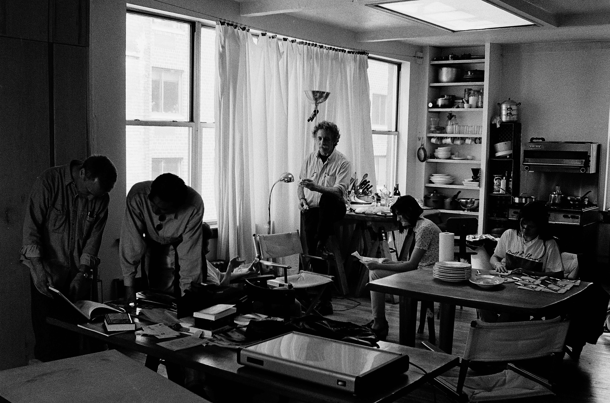
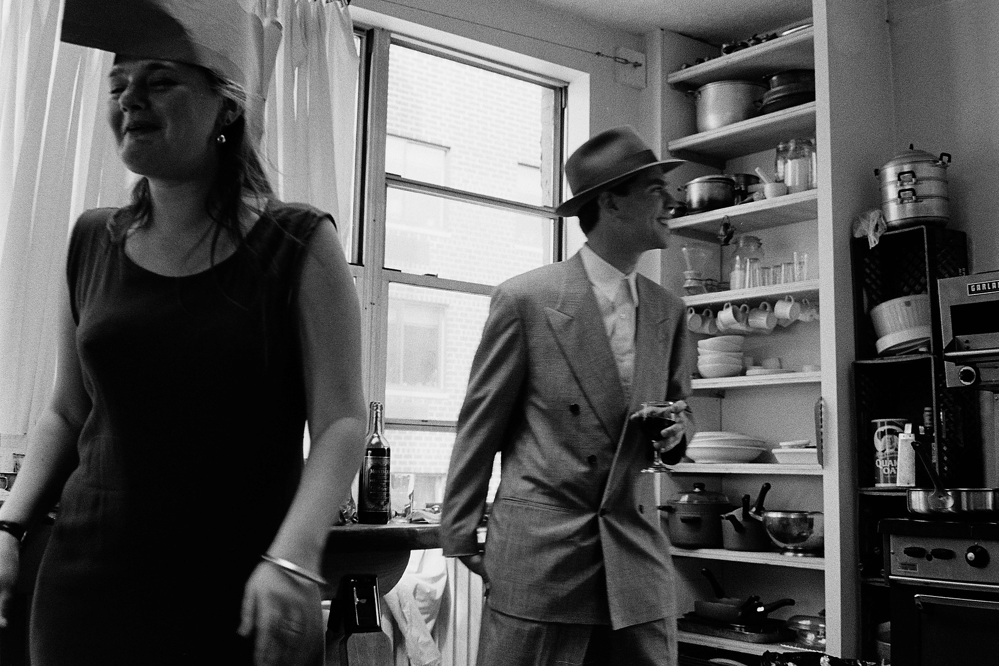
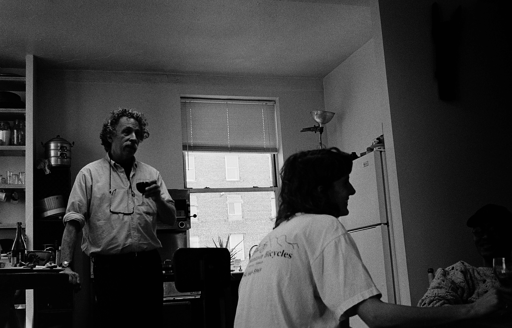
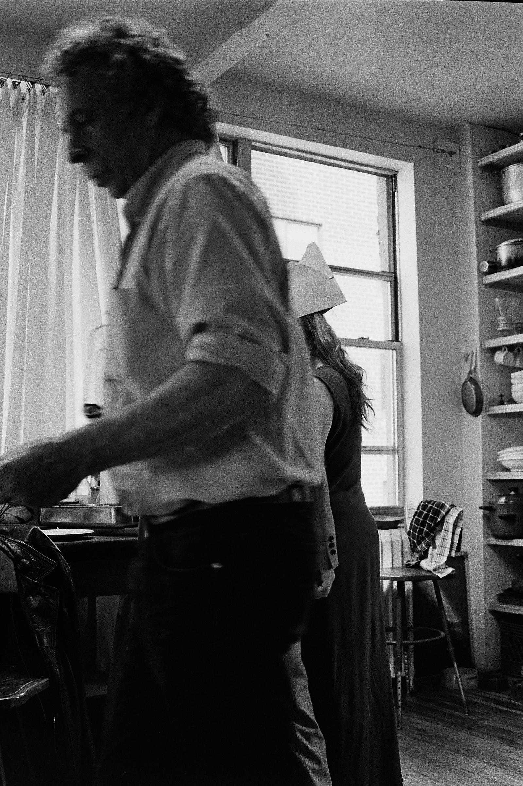
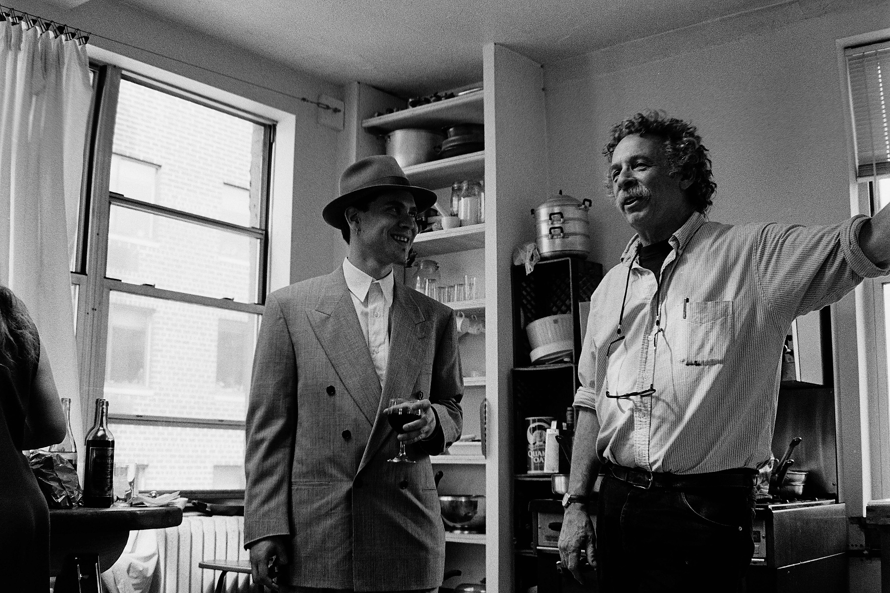
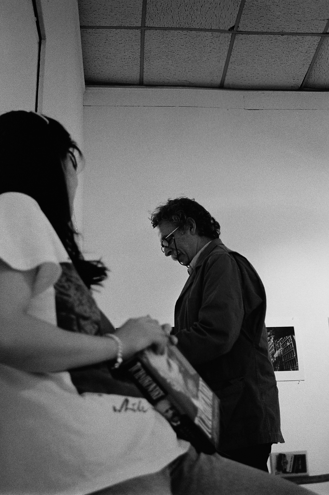
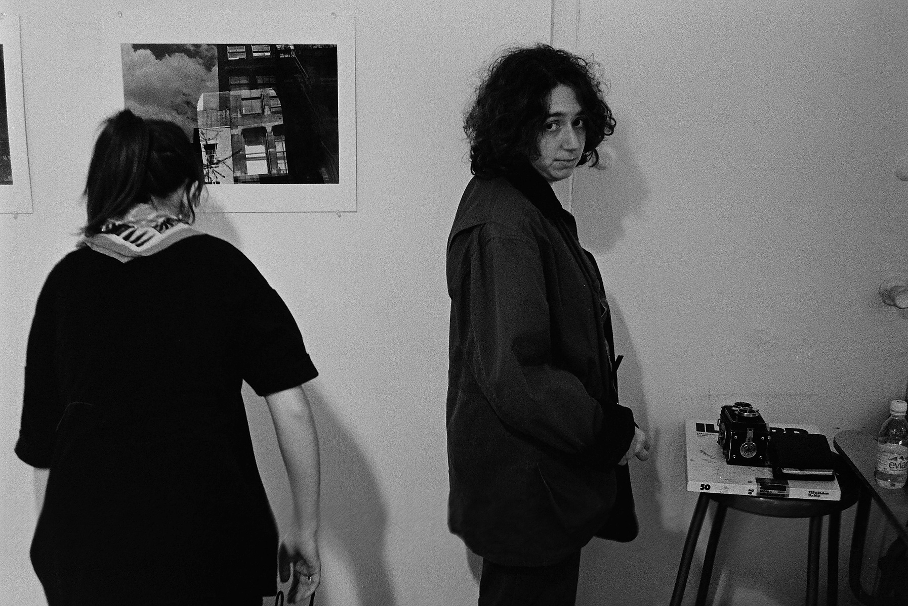
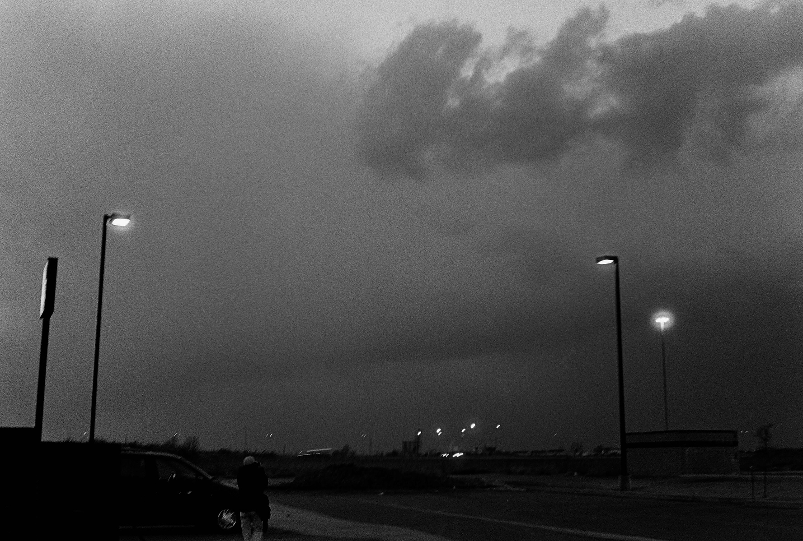

← Photography
Photography
A Walk into the Crowd – Vol. 1
1994 – 1999 · Early film photography from the Pratt Institute years in New York and Montreal.

Philip's Studio, 6th Ave, New York, 1996

Philip's Studio, 6th Ave, New York, 1996

Philip and Tracy, Philip's Studio, 6th Ave, New York, 1996

Philip's Studio, 6th Ave, New York, 1996

Philip's Studio, 6th Ave, New York, 1996

Philip, Pratt Institute, Brooklyn, New York, 1996

Jill and Diane, Pratt Institute, Brooklyn, New York, 1996

Montreal, Canada, 1996
Previous
← A Walk into the Crowd Vol. 2
Next
–